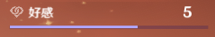

bug反馈（请提供识别错误的原始图片）：https://bbs.nga.cn/read.php?tid=26993909
灵感来源：https://bbs.nga.cn/read.php?tid=26971420
使用方法：
1. 截图并保存为png或24位bmp格式，截取图片示例：

2. 选择当前好感度等级
3. 在选择文件处选择图片或拖拽图片到拖拽处或直接粘贴图片即可查看结果
当前好感进度：{{exp.process}}
当前好感经验：{{exp.curr}}
升级到下一级需要的好感经验：{{exp.next}}
升级到10级需要的好感经验：：{{exp.full}}
升级经验表
| 等级 | 需要经验 |
| {{i+1}}~{{i+2}} | {{e}} |